996.1389分，断层领先！
巴黎奥运会花游赛场上，中国花游队的八位姑娘们以超出第二名美国队81分的成绩，毫无悬念地赢得了金牌。
这是巴黎奥运会花游项目产生的首枚金牌，也是中国花游队历史上夺得的首枚金牌。
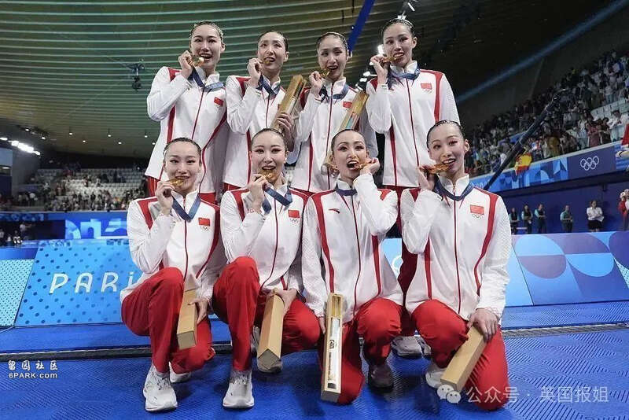
从多年没有成绩濒临解散，到北京奥运会站上领奖台，再到今日在巴黎首次摘金……
八位姑娘，冯雨、张雅怡、向玢璇、王芊懿、肖雁宁、王柳懿、王赐月、常昊，书写了新的历史！
在中国花样游泳队诞生的第41年，在几代花游人的共同努力下，中国姑娘们终于实现了奥运冠军梦……
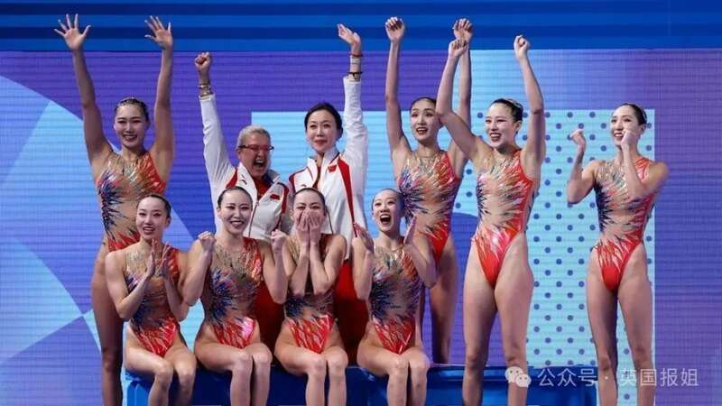
这届奥运会，花样游泳规则发生了翻天覆地的变化。
2023年初，世界泳联执行新版花游规则，重新规范了每个动作的量化分值，技术手册也增厚了四倍。
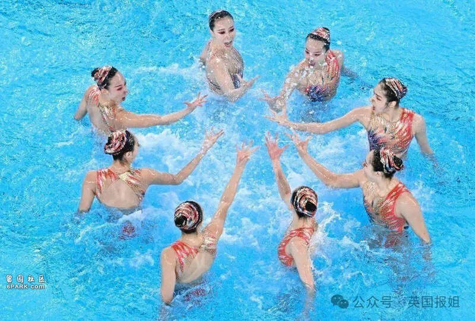
最重要的是，运动员一旦在比赛中动作失误，没有完成申报的动作难度分值，就会被降回到基准分。
——这也意味着，更高的难度，也更可能会“滑铁卢”。
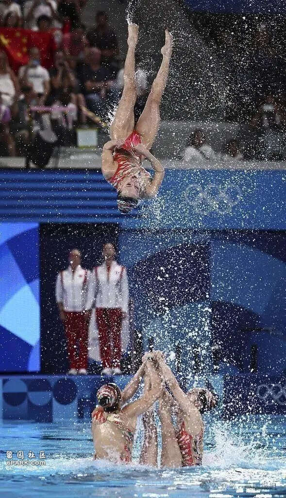
不过，咱们这枚金牌的得来过程，并不算“惊心动魄”。
集体项目分为三个部分，分别是技术自选、自由自选和技巧自选。
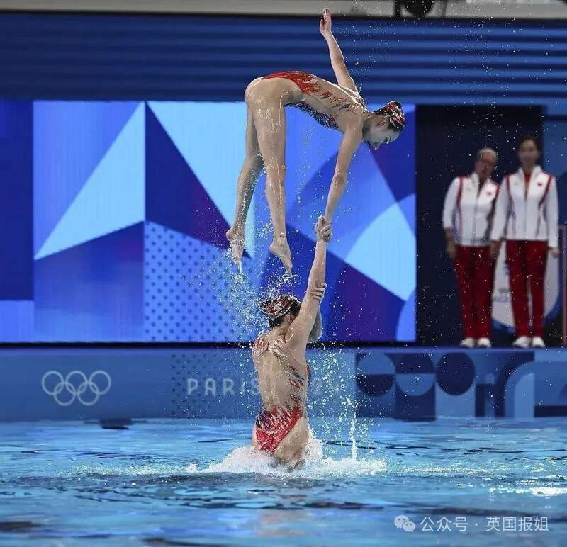
其中，技术和自由两项比赛中，中国队都是大比分领先。
在技巧自选比赛举行前，姑娘们已经靠着出色发挥提前取得断层优势，领先第二名69分……
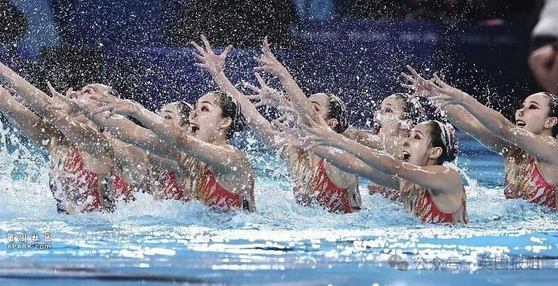
所以，决赛时，中国花游姑娘们对这枚金牌势在必得。
最终压轴出场的中国队，选择了在过去两届世锦赛中打磨出来的《生命之光》。
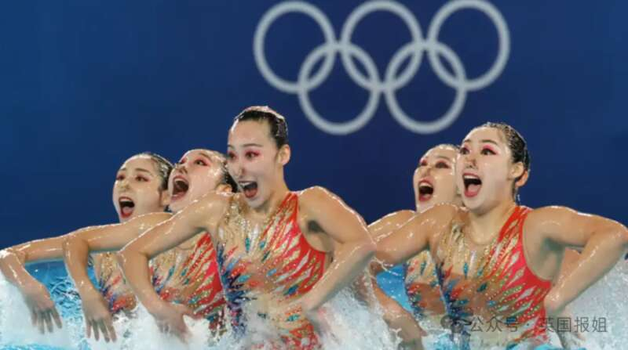
这套动作非常有挑战，高强度高难度，长时间水下屏气，团队配合意思不能出差错。
在七个技巧动作中，包含三个独创难度。
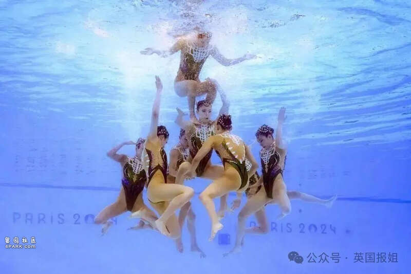
除此之外，这套比赛的设计，也有很多巧思。
手型上有典型的“兰花指”，泳衣上有窗花的元素，陆上动作里融入了武术元素咏春……
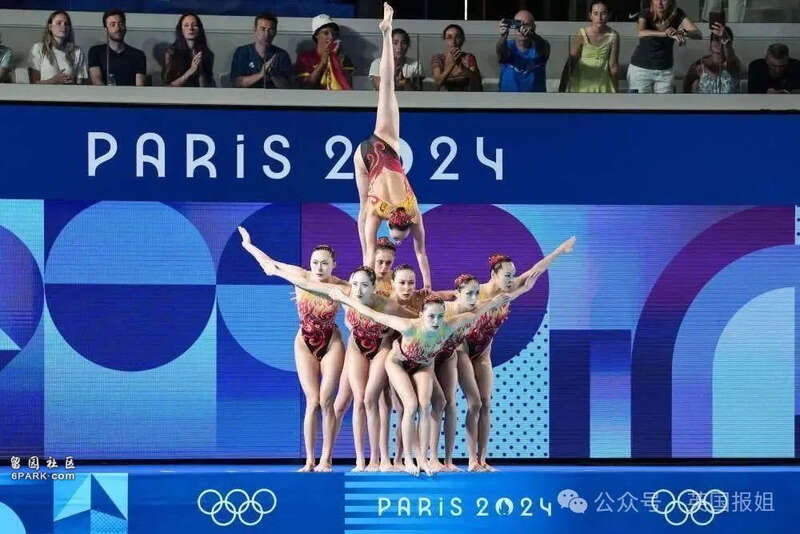
除此之外，其中一个特殊的动作，就是队员们用腿摆出了中国的甲骨文“山”字。
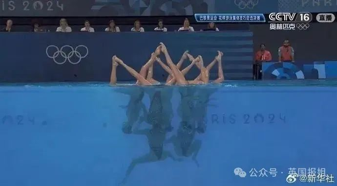
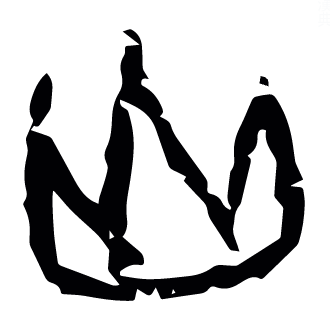
（甲骨文：“山”）
精彩纷呈的3分钟后，所有人都被她们的精彩表现震撼。
最终，中国花游三项总分996.1389分，领先第二名美国队81.7968分，断层领先，夺得历史上第一块花游金牌！
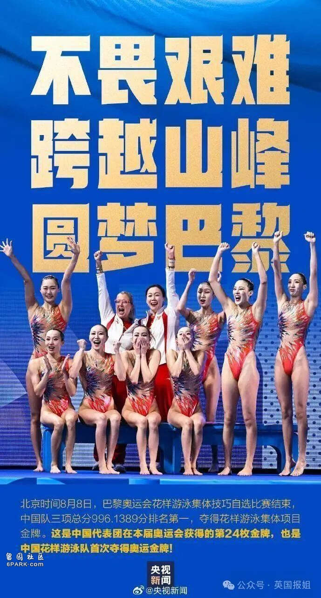
在这场比赛后，获得银牌的美国选手杰奎琳·刘感叹道：
“她们的动作完成得令人惊叹——她们游起来就像机器一样，干净利索。我们想把这些融入到我们的动作中。”
另一名美国选手杰米·查考斯基也表示：
“我们非常尊重她们，你可以看到她们付出了多少努力。毫无疑问，金牌是她们应得的。”
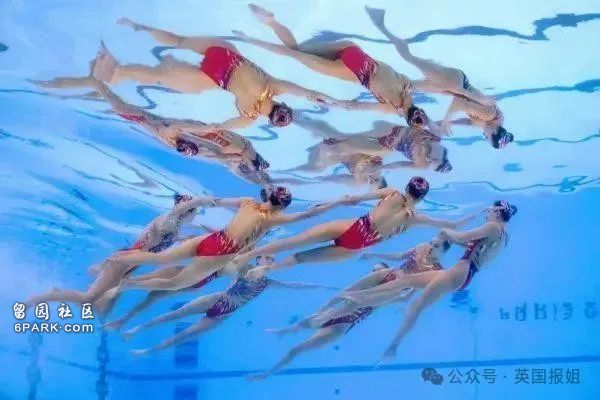
中国花游队的表演视频，在外网迅速获得了200万点赞。
巴黎奥运会官网也称：
“这是一场令人难以置信的艺术表演。”
而在荣誉的背后，这枚金牌，真的太不容易了……
事实上，和现在各大花游强国相比，中国花游队的历史实在太短了。
1982年，国际奥委会宣布，花样游泳成为1984年奥运会正式比赛项目。
1983年，中国花样游泳队匆匆成立。
当时中国还没有现在一样的国力，能够给予的支持也并不是很多。
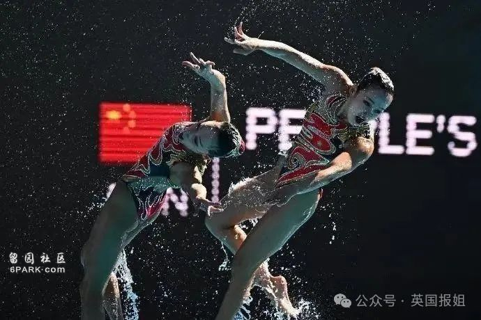
那个时候，其他国家的花游队已经成立了多年，而中国队拥有的只是两个简陋的室外泳池，甚至连技术动作，都只能依靠国外游泳队的录影带，自己研究摸索。
这样匆匆成立的队伍，自然没法登上1984年的奥运舞台，1988年我们虽然拥有了参加奥运会的资格，但成绩也十分惨烈。
当年，我们没有参加集体项目的比赛，单人项目的成绩在世界二十名开外，双人项目成绩则排在第11位。
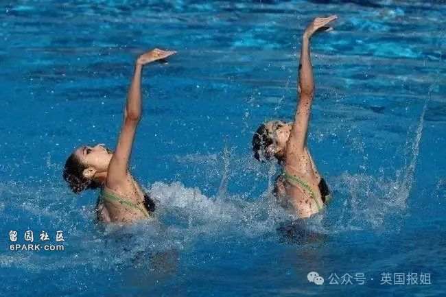
值得一提的是，花游比赛是一个有很深的“传统”的项目。
比赛长期沿用同一竞赛、评判模式，因此俄罗斯、日本、西班牙等花游强国拥有的优势极大，技术成熟，动作水平极高。
除此之外，裁判员也会因为印象分而不自觉地提高对花游强国的打分成绩，让其优势更加凸出。
世界大赛的名次很少有变动，想提高一位都很困难。
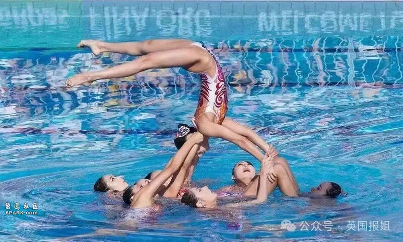
长时间看不到成绩，国家体委甚至一度打算在1996年亚特兰大奥运会之后就解散花游队。
但当时的中国花游队进行了大量的努力和争取，向国家体委证明了自己的潜力和决心。
最终体委作出了让步，但条件是他们必须在奥运会上进入前八名……
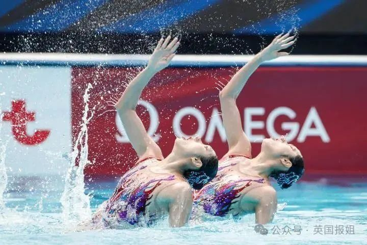
在这样的压力下，当年的花游姑娘们拼尽全力。
为了在水中翩然起舞时看起来毫不费力，她们必须要付出难以想象的艰苦卓绝的努力。
在总局训练场馆中，中国花样游泳队几乎是每天去最早的，也是每晚最晚离开的。
这是一项“全能运动”，要力量，要柔韧，要游泳技巧，要舞蹈技巧，要表情管理，要跳水动作，要心肺功能和耐力……
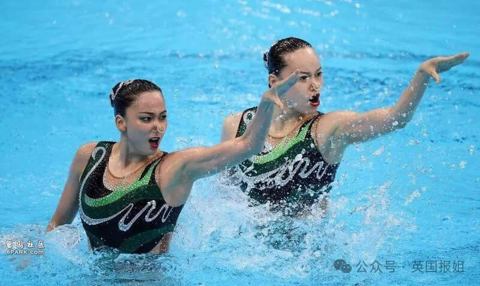
曾经的中国花游部部长余丽就曾举例：
“夹着杠铃练双芭蕾腿，头在水里不出来，一次3分钟。10个100米游达不到规定成绩要补，全部完成为止。”
前国家队选手顾贝贝也发表过一次心声：
“我想雇一个游泳运动员，帮我游每天的4000米；雇一个田径运动员，帮我每天早上绕着田径场跑步；雇一个举重运动员，帮我扛杠铃；
雇两个舞蹈演员，一个帮我跳古典芭蕾、一个跳民族舞；雇一个水球运动员，帮我练踩水、跃起；雇一个南海捞珍珠的，帮我憋3分钟……”
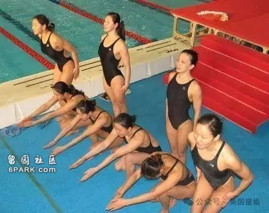
但最终，她们做到了。
在1996年亚特兰大奥运会上，中国花样游泳队的成绩是第七名。
中国花游队的姑娘们，用成绩，挽救了“濒死”的队伍……
从那之后，中国花游队的成绩，开始稳步向前。
2000年的悉尼奥运会，第六名。
2004年的雅典奥运会，还是第六名。
2006年的亚运会，中国花游队首次战胜传统花游强国日本队夺冠，标志着中国花游在亚洲的崛起。
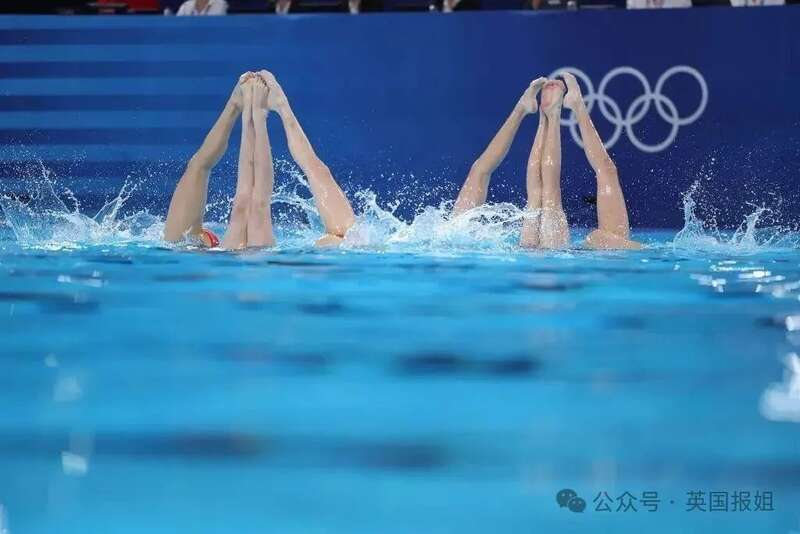
她们没有停下前进的脚步。
2008年的北京奥运会，中国花游队首次摘得一枚铜牌，这也是这一项目奥运会上的首枚奖牌。
2009年的世锦赛，一银四铜。
2010年的世界杯，中国花游历史上首个世界冠军。
2011年世锦赛，六银一铜。
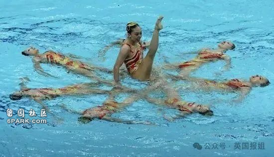
2012年伦敦奥运会上，中国队派出“以老带新”的阵容，创造了新历史。
实力强大的俄罗斯队以197.03分的优势蝉联集体项目冠军，并囊括花样游泳所有项目金牌。
我们以194.01分，首次获得了这一项目的银牌……
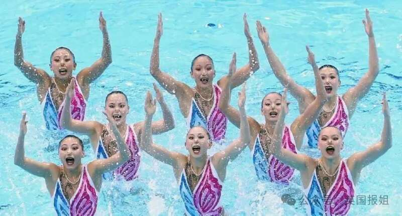
2016年里约奥运会，俄罗斯再次卫冕，中国银牌。
2021年东京奥运会，俄罗斯再次卫冕，中国银牌。
2024年巴黎奥运会……
俄罗斯没参加，中国夺冠。
的确，花样游泳的比赛缺少了俄罗斯队，是一种遗憾。
然而现在网上有些人因此说这枚金牌没有技术含量，那就算是大放厥词了。
事实上，俄罗斯绝对不是“独孤求败”。
中国队和俄罗斯队的差距，一直在缩小。
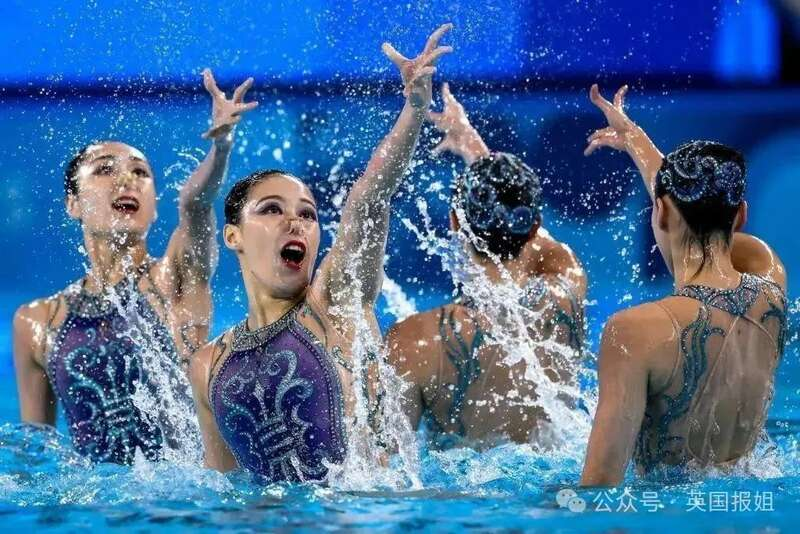
伦敦奥运会上，两队分差还在3分多，到了东京奥运会，已经只差2.3分了。
——也就是说，即使在旧规则下，俄罗斯队来了，两队也是“旗鼓相当”的对手，而非有些人口中的碾压。
更何况，花样游泳改了规则。
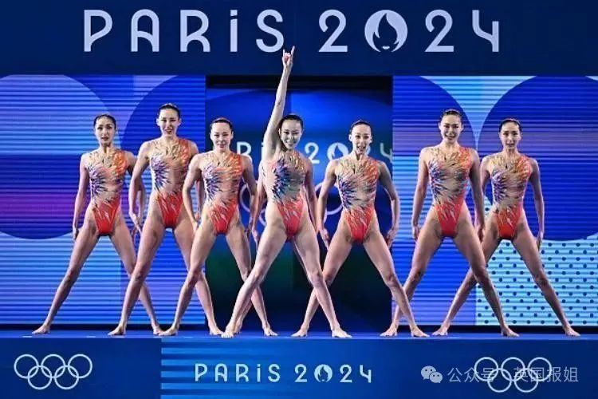
记得前面我们提到的吗？花样游泳队的传统强国，之所以能一直保持优势，就是因为其规则几十年没有变动，有模糊的“印象分”。
而翻天覆地的新规则中，所有的动作分值都被量化，更加强调技术性，而不是艺术性。
而中国花游队为了新规则，绞尽脑汁日夜研究，逐渐拉大了优势，成为分数断层的世界第一。
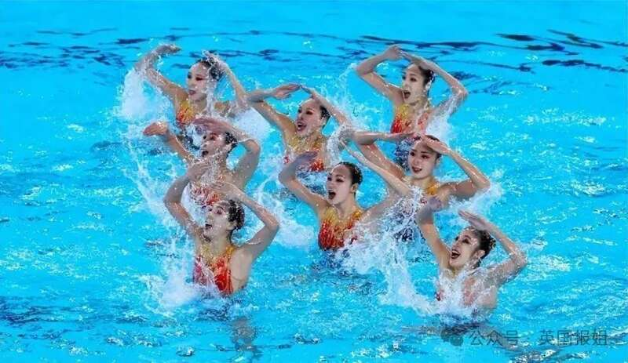
我们无法评估俄罗斯队在新规则下的成绩——因为从东京奥运会之后，她们没有被允许参加过任何一个正式世界大赛。
但是，我们能够打败其他所有传统花游强国，获得将近一百分的断层优势，意味着我们的实力早已不容小觑。
这枚金牌，并不是因为俄罗斯不来，被我们捡漏的。
这是中国花游队靠实力，堂堂正正地赢下来的。
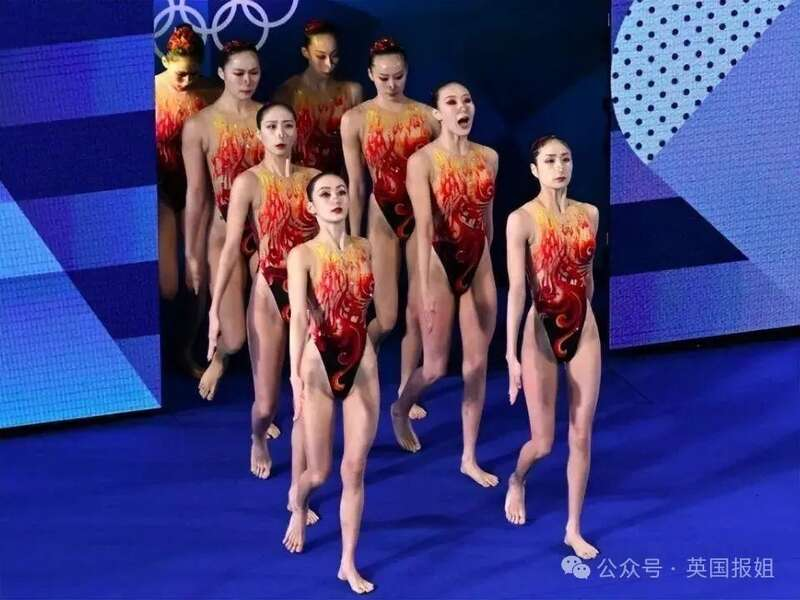
在直播中，解说念出来中国花游队姑娘的名字，几近哽咽。
这是41年以来，几代花游人的共同努力，得到的金牌……
恭喜我们的姑娘们呀！
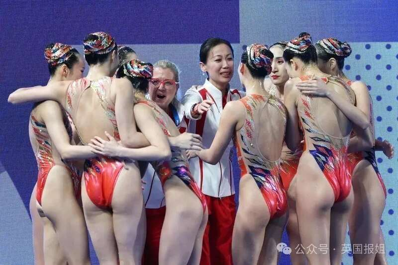
推荐阅读▼🔗法国骚操作逼走天才体操少女？她替“敌国”出征巴黎夺金，领奖台大唱国歌：法国啊，你们大势已去！
🔗英国大乱！疑17岁移民少年乱刀捅死3名小女孩引爆众怒，暴力烧车袭警砸店事件蔓延全国！
🔗辣眼！撑杆跳选手因“法棍卡杆”爆红，跳水选手泳裤太紧“凸出荧幕”？网友：我成盯裆猫了嘿嘿嘿